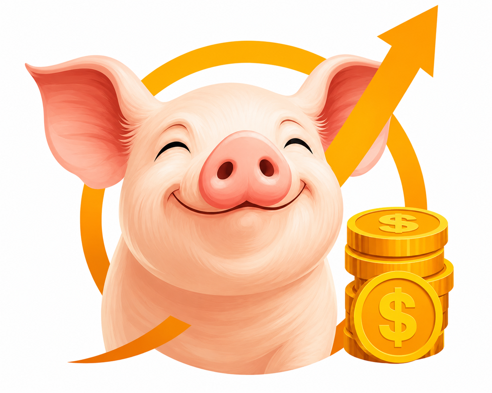

Dashboard
Sesión: Instructor

Tu progreso —módulos completados y checklists— se guarda en este dispositivo con tu nombre. Puedes cambiar de estudiante o reiniciar cuando quieras.
Ajustes del instructor. Se aplican a las evaluaciones y al avance entre módulos.